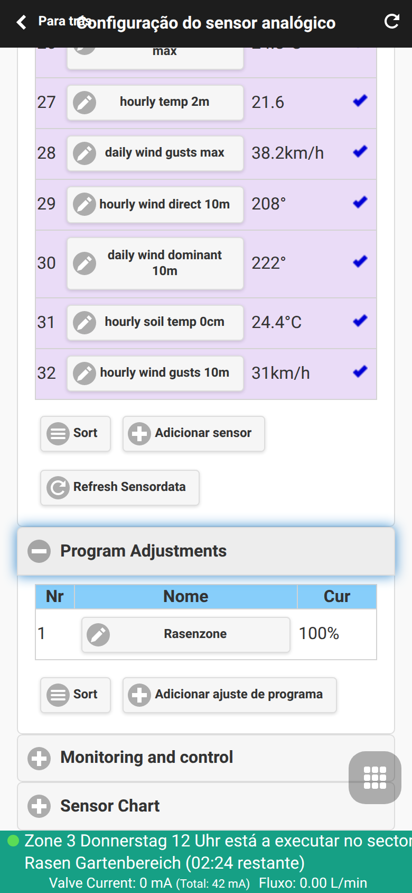
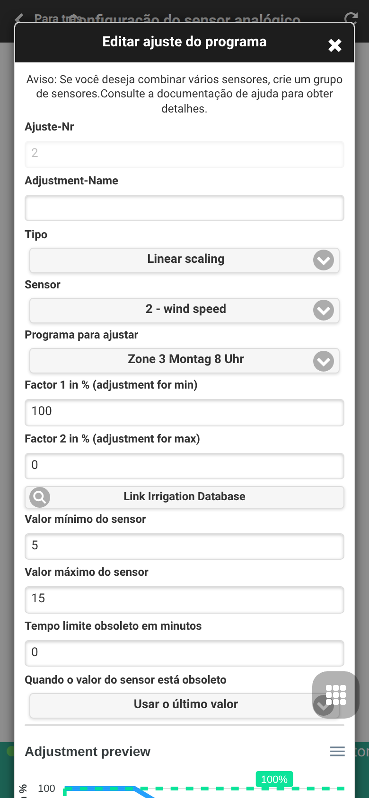
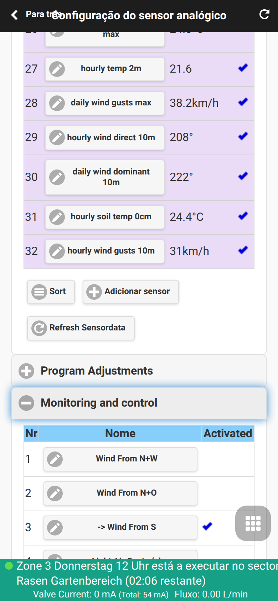
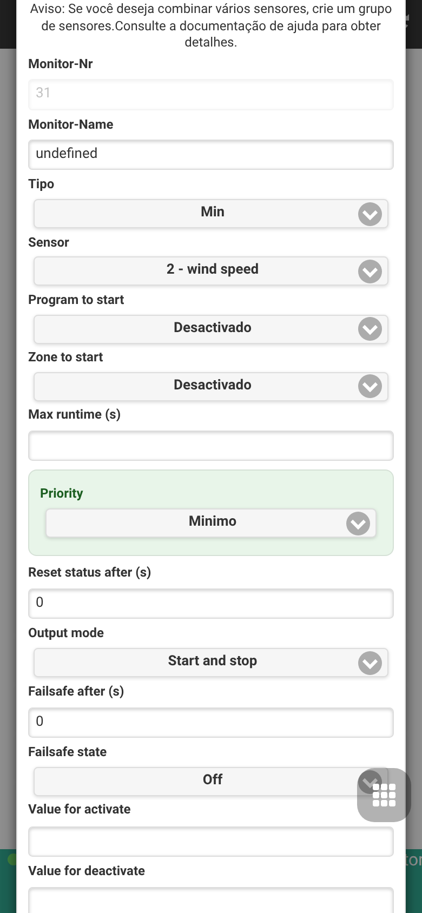

Automação e Monitores de Sensores
O OpenSprinklerPro combina dados de sensores, ajustes de programas e regras de monitoramento. Todo o fluxo operacional na interface gráfica está documentado em Configuração de Sensor Analógico; esta página descreve os detalhes técnicos de automação e as chamadas de API/MCP como configure_adjustment e configure_monitor.
Ajustes de programas baseados em sensores
Os ajustes de programas escalam dinamicamente a duração da irrigação com base em valores de sensores ativos.
| Tipo | Comportamento |
|---|---|
LINEAR |
Mapeia linearmente o intervalo min/max do sensor para os fatores de ajuste 1 e 2. |
DIGITAL_MIN |
Reduz ou pausa a irrigação caso o sensor esteja abaixo/igual ao valor mínimo. |
DIGITAL_MAX |
Reduz ou pausa a irrigação caso o sensor esteja acima/igual ao valor máximo. |
DIGITAL_MINMAX |
Aplica o comportamento digital fora do intervalo mínimo e máximo. |


Monitores
Os monitores supervisionam os valores dos sensores ou condições lógicas e geram regras de controle locais ou gatilhos de automação. Eles também podem disparar eventos de notificação.
| Tipo de Monitor | Objetivo |
|---|---|
| MIN / MAX | Verificação de limite simples (máximo/mínimo) |
| SENSOR12 / SET_SENSOR12 | Integração digital de sensores de chuva/solo da placa base |
| AND / OR / XOR / NOT | Combinações lógicas baseadas em outros monitores ativos |
| TIME | Condição baseada em janela de horário ou período de tempo |
| REMOTE | Monitorar o estado e condição de outro controlador remoto OpenSprinkler |

